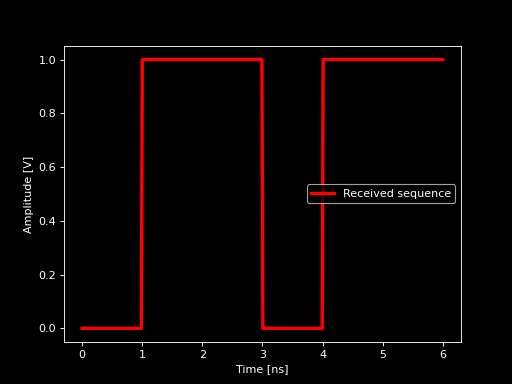

PPM Devices
Use this module to simulate the PPM modulation optical systems.
>>> import opticomlib.ppm as ppm
Functions
|
PPM Encoder |
|
PPM Decoder |
|
Hard Decision Decoder |
|
Soft Decision Decoder |
|
Threshold Estimator |
|
PPM Digital Signal Processor |
|
BER Analizer |
|
Calculates the theoretical bit error probability for a PPM system. |
- opticomlib.ppm.PPM_ENCODER(input: str | list | tuple | ndarray | binary_sequence, M: int) binary_sequence[source]
PPM Encoder
Converts an input binary sequence into a binary sequence PPM encoded.
- Parameters:
input (
binary_sequence) – Input binary sequence.M (
int) – Number of slots that a symbol contains.
- Returns:
ppm_seq – Encoded binary sequence in PPM.
- Return type:
binary_sequence
Notes
The input binary sequence is converted into a PPM sequence by grouping each \(\log_2{M}\) bits and converting them into decimal. Then, the decimal values are the positions of ON slots into the PPM symbols of length \(M\).
Examples
>>> from opticomlib.ppm import PPM_ENCODER >>> PPM_ENCODER('01111000', 4).data.astype(int) array([0, 1, 0, 0, 0, 0, 0, 1, 0, 0, 1, 0, 1, 0, 0, 0])
- opticomlib.ppm.PPM_DECODER(input: str | list | tuple | ndarray | binary_sequence, M: int) binary_sequence[source]
PPM Decoder
Receives a binary sequence encoded in PPM and decodes it.
- Parameters:
input (binary sequence in form of a string, list, tuple, ndarray or binary_sequence) – Binary sequence encoded in PPM.
M (
int) – Order of PPM modulation.
- Returns:
Decoded binary sequence.
- Return type:
binary_sequence
Examples
>>> from opticomlib.ppm import PPM_DECODER >>> PPM_DECODER('0100000100101000', 4).data.astype(int) array([0, 1, 1, 1, 1, 0, 0, 0])
- opticomlib.ppm.HDD(input: str | list | tuple | ndarray | binary_sequence, M: int)[source]
Hard Decision Decoder
Estimates the most probable PPM symbols from the given binary sequence.
If there is any symbol without ON slots, then one of them is raised randomly
If there is any symbol with more tan one ON slots, then one of them is selected randomly
Other case algorithm do nothing.
- Parameters:
input (binary sequence in form of a string, list, tuple, ndarray or binary_sequence) – Binary sequence to estimate.
- Returns:
Sequence of estimated symbols ready to decode.
- Return type:
binary_sequence- Raises:
ValueError – If M is not a power of 2.
ValueError – If the length of input is not a multiple of M.
Examples
>>> from opticomlib.ppm import HDD, binary_sequence >>> >>> HDD(binary_sequence('0100 0111 0000'), 4).data.astype(int) array([0, 1, 0, 0, 0, 0, 0, 1, 0, 0, 0, 1])
- opticomlib.ppm.SDD(input: electrical_signal, M: int) binary_sequence[source]
Soft Decision Decoder
Estimates the most probable PPM symbols from the given electrical signal without sampling. It integrate the signal in slots and then, it selects the slot with the highest energy.
- Parameters:
input (:obj`electrical_signal`) – Unsampled electrical signal.
- Returns:
Sequence of estimated symbols ready to decode.
- Return type:
obj`binary_sequence`
- Raises:
ValueError – If M is not a power of 2.
ValueError – If the length of input is not a multiple of M*sps.
Examples
>>> from opticomlib.ppm import SDD, electrical_signal, gv >>> import numpy as np >>> >>> x = np.kron([0.1,1.2,0.1,0.2, 0.1,0.9,1.0,1.1, 0.1,0.1,0.1,0.2], np.ones(gv.sps)) >>> SDD(electrical_signal(x), M=4).data.astype(int) array([0, 1, 0, 0, 0, 0, 0, 1, 0, 0, 0, 1])
- opticomlib.ppm.THRESHOLD_EST(eye_obj: eye, M: int)[source]
Threshold Estimator
Estimates the decision threshold for M-PPM from means and standard deviations of
eye_obj.- Parameters:
eye_obj (
eye) – eye object with the parameters of the eye diagram.M (
int) – Order of PPM.
- Returns:
Estimated threshold.
- Return type:
float- Raises:
ValueError – If M is not a power of 2.
TypeError – If eye_obj is not of type eye.
Examples
>>> from opticomlib.ppm import THRESHOLD_EST, eye >>> >>> eye_obj = eye({'mu0':0.1, 'mu1':1.1, 's0':0.1, 's1':0.1}) >>> THRESHOLD_EST(eye_obj, M=4)
- opticomlib.ppm.DSP(input: electrical_signal, M: int, decision: Literal['hard', 'soft'] = 'hard', BW: float = None)[source]
PPM Digital Signal Processor
Performs the decision task of the photodetected electrical signal.
If
BWis provided bessel filter will be applied to the signal (opticomlib.devices.LPF())eye diagram parameters are estimated from the input electrical signal with function
opticomlib.devices.GET_EYE().it subsamples the electrical signal to 1 sample per slot using function
opticomlib.devices.SAMPLER().if
decision='hard'it compares the amplitude of the subsampled signal with optimal threshold. The optimal threshold is obtained from functionopticomlib.ppm.THRESHOLD_EST().then, it make the decision (
opticomlib.ppm.HDD()ifdecision='hard'oropticomlib.ppm.SDD()ifdecision='soft').Finally, it returns the received binary sequence, eye object and optimal threshold.
- Parameters:
input (
electrical_signal) – Photodetected electrical signal.M (
int) – Order of PPM modulation.decision (
str, optional) – Type of decision to make. Default is ‘hard’.BW (
float, optional) – Bandwidth of DSP filter. If not specified, signal won’t be filtered.
- Returns:
output (
binary_sequence) – Received bits.eye_obj (
eye, optional) – Eye diagram parameters, only ifdecision='hard'.rth (
float, optional) – Decision threshold for PPM, only ifdecision='hard'.
- Raises:
TypeError – If input is not of type electrical_signal or Array_Like.
ValueError – If input has less samples than sps.
ValueError – If M is not a power of 2.
ValueError – If decision is not ‘hard’ or ‘soft’.
Examples
from opticomlib.devices import DAC, gv from opticomlib.ppm import DSP import numpy as np import matplotlib.pyplot as plt gv(sps=64, R=1e9) x = DAC('0100 1010 0000', pulse_shape='gaussian') x.noise = np.random.normal(0, 0.1, x.len()) y = DSP(x, M=4, decision='soft') DAC(y).plot(c='r', lw=3, label='Received sequence').show()
(
Source code,png,hires.png,pdf)
{kind=link}
{kind=link}
{kind=link}
- opticomlib.ppm.BER_analizer(mode: Literal['counter', 'estimator'], **kwargs)[source]
BER Analizer
Calculates the bit error rate (BER), either by error counting (comparing the received sequence with the transmitted one) or by estimation (using estimated means and variances from the eye diagram and substituting those values into the theoretical expressions).
- Parameters:
mode (
str) – Mode in which the Bit Error Rate (BER) will be determined.Tx (
binary_sequence, optional) – Transmitted binary sequence. Required if mode=’counter’.Rx (
binary_sequence, optional) – Received binary sequence. Required if mode=’counter’.eye_obj (
eye, optional) – eye object with the estimated parameters of the eye diagram. Required if mode=’estimator’.M (
int, optional) – Order of PPM modulation. Required if mode=’estimator’.decision (
str, optional) – Type of decision to make, ‘hard’ or ‘soft’. Default is ‘soft’. Required if mode=’estimator’.
- Returns:
BER.
- Return type:
float- Raises:
ValueError – If mode is not ‘counter’ or ‘estimator’.
ValueError – If decision is not ‘hard’ or ‘soft’.
KeyError – If Tx or Rx are not provided when mode=’counter’.
KeyError – If eye_obj or M are not provided when mode=’estimator’.
ValueError – If M is not a power of 2.
- opticomlib.ppm.theory_BER(mu1: float | ndarray, s0: float | ndarray, s1: float | ndarray, M: int, decision: Literal['soft', 'hard'] = 'soft')[source]
Calculates the theoretical bit error probability for a PPM system.
- Parameters:
mu1 (
floatorndarray) – Average current (or voltage) value of the signal corresponding to a bit 1.s0 (
floatorndarray) – Standard deviation of current (or voltage) of the signal corresponding to a bit 0.s1 (
floatorndarray) – Standard deviation of current (or voltage) of the signal corresponding to a bit 1.M (
int) – Order of PPM modulation.decision (
str, optional) – Type of PPM decoding. Default is ‘soft’.
- Returns:
Theoretical bit error probability (BER).
- Return type:
float- Raises:
ValueError – If M is not a power of 2.
ValueError – If decision is not ‘hard’ or ‘soft’.
Notes
The theoretical bit error probability is calculated using the following expression:
\[P_e = \frac{M/2}{(M-1)}P_{e_{sym}}\]where \(P_{e_{sym}}\) is the symbol error probability, and is calculated as follows for
decision='soft':\[P_{e_{sym}} = 1 - \frac{1}{\sqrt{2\pi}}\int_{-\infty}^{\infty} \left( 1-Q\left( \frac{\mu_1+s_1x}{s_0} \right) \right) ^{M-1} e^{-x^2/2}dx\]and for
decision='hard':\[P_{e_{sym}} = 1 - Q\left( \frac{r_{th}-\mu_1}{s_1} \right) \left( 1-Q\left( \frac{r_{th}}{s_0} \right) \right)^{M-1}\]Examples
>>> from opticomlib.ppm import theory_BER >>> theory_BER(mu1=1, s0=0.1, s1=0.1, M=8, decision='hard') 8.515885763544466e-07 >>> theory_BER(mu1=1, s0=0.1, s1=0.1, M=8, decision='soft') 3.074810247686141e-12